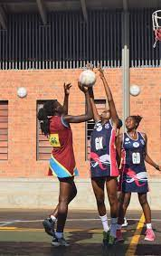

Bugem university is a sevenithday adventist chartered university
'Bugema has many schools and departments inclussive of the following;
- Information and communication technology department
- Department of social work and social admnistration
- Department of natural science
- Department of agriculture
- Department of evangelism and pastoral ministry
AT Bugema, we have the following schools as well that offer te best services ever;
an bugema looks like this;


- school of nursing
- school of social work and social administration
- school of bussiness computing
- school of accounting
- school of education
among others/to mention but a few.
THE FOLLOWING ARE THE REASONS AS TO WHY I JOINED BUGEMA UNIVERSITY
- Bugema is a religious based institution ie seventhday adventist chartered
- Bugema has enough facilities to ensure proper learning and spiritual growth
- Bugema university favours all kinds of sports activities such as,
- woodball
- football
- basketball
- volleyball among others
- netball

- Bugema has a good environment to favour one make research and learn effectively
- bugema has good practical skills and enough advertisements to make one join it
I being a student of Computing school and iformatics, let me briefly talk about it;
the shool of computing favours or occupies the most part in academic learning as its comprised of major courses like introduction to computing skills among the rest,
it has alot of holistic activities that favour learning as students learn different activities such as;
- coding
- designing websites
- hucking
- systems maintainance and design
and above all, students are shaped into positionds to atart their own jobs but not t to look for jobs after the academic journey.
click